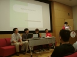

6 月 11 日 パネルディスカッション「Rails in Production」
二日目のパネルディスカッションは、発表後二年足らずでエンタープライズ層に一気に浸透した Ruby on Rails (以下 RoR と略す) の活用事例紹介が主、だったと思っていたのですが、会期中に増員されふくれあがったコメンテータを前に、登壇者がいたく恐縮してしまう一幕もありました。
パネル企画「Rails in Production」
- 時間
- 13:16〜14:18
- 司会
- 高橋征義氏


- 実装寄り度 ★
- 実例度 ★★★★
- 対決度 ★★
- 分業話度 ★
- 内輪暴露度 ★★★
- 乱入度 ★★★
- 講演資料 (大前)
- http://jp.rubyist.net/RubyKaigi2006/?c=plugin;plugin=attach_download;p=program0611;file_name=rails_in_production_omae.pdf
- 講演資料 (瀧内)
- http://rails.office.drecom.jp/takiuchi/file/41/cnVieWthaWdpMDZfdGFraXVjaGnlqg.ppt
主なコメンテータ
初日パネルでコメンテータからの多彩な意見が好評だったため、事前発表では一名だったコメンテータを、一生懸命集めて増やしたそうです。
- 西
- DHH
- 吉田 (moriq)
- 前田
- secondlife
- Zev (同時通訳)
- arton (ナイスフォロー)
- essa (巻き込まれ)
- かずひこ (ちゃっかり)
RoR の作者はじめ、日本で続々と出版が予定されている RoR 関連本の著者訳者がずらり。
パネリスト発言
大前潤氏 (株式会社オープングルーヴ 技術責任者)
feedbringer
- Web 型 RSS リーダ
- 40000 リクエスト／日、二ヶ月前1にはもっとあったが、例のあの (w
- load average: 0.1〜0.5
- CPU: 80〜90% idle
フィード巡回サーバ
- AR, REXML
0.13.1 のまま進んでる
- 一部 1.0 を取り込んでる
- リスタート発行するとリークあるので書き換えてある
ストヤン・ジェコフ氏 (Stoyan Zhekov)
ブルガリア人
- 社内システムで日報とシステムモニタリング。
- これからは mongrel2
- 問題はたくさんある
- あまり productive じゃない
「なんで自分が前に座ってるのか、よくわからない。」
瀧内元気氏 (株式会社ドリコム)
仕事で使えますか？
「もう使ってます。」
ドリコムと RoR
- 出会いの頃のドリコム: 模索期
- 社内エンジニア集めて 7 時間に及ぶ洗脳
- B2C3 サービスはすべて RoR に
- どうやって憶えさす？
- 社内プログラミングコンテスト
- その結果、普及
事例紹介
- キャリアサーチ 求人情報専用
- 30 万 PV/month
なぜ Apache？
使い方
高木宏氏 (Gollum)
勤務先
弱小ファイアウォール保守運用監視
After Rails
- とにかくちょちょい
- Excel をサーバに→悪魔のようなことはやめよう
- 空白全角文字は悪魔の文字だ
- 危機保守 (ははは)
- AR 単体でバッチ処理、が非常に多い
図に乗って顧客向けにも
- LogWeb、ついこないだサービス商品化。
困ったこと
- ほとんどない
- 高負荷にさらしたことがない
- 更新系は遅い
- 悩ましいのは名前衝突問題
- マスタ共有の方法論・帳票化の定石がない
Q&A
- Q1 (DHH さん)
- ActiveHeart8 とは何か？
- A1 (secondlife さん)
- 日本人向けのプラグイン。日本ではメール送信が UTF-8 ではない。携帯向けに便利。
- Q2 (arton さん)
- Rails って最初から MVC9 がいっぱい出てくるところが、普通の Web アプリ開発と違うような気がするが、どういう開発方法をとってるのかな？
- A2 (Stoyan さん)
- モデルつくって migrate10 にまかせて、おしゃれに。
- A2 (大前さん)
- ユーザ・インタフェースから VC 中心に固めつつモデルも結局さわるんだけど、で、ぐるぐる回す。業務系に近いときにはデータがすべてでやればいいけど。
- A2 (瀧内さん)
- エンジニアによりけり。migrate が最初。
- A2 (高木さん)
- アプリによりけり。さくっとの場合は適用にモデル決めて scaffold。でかい業務では scaffold 使ってない。いくら migrate あってもダメ、の場合があり、モデル固めてる場合が多い。
- Q3 (前田さん)
- Rails のここがイヤだ、ここが困った、といったことはありますか？
- A3
- (回答者ゆずりあい)
- A3 (高木さん)
- 名前の衝突でおもしろいことが起こる。データのカラム名と予約語の関係。一瞬エラーが出ないので困る。「Rails いじめ」mixi 日記の 2005 年 12 月。カラムに type という名前をつけてしまった。予約語なのに、Order.new が通る。代入も通ってしまう。調べてみると、データ nil かい？ カラムの名前に思いつく言葉が、よく同様に‘当たる’。
- A3 (Stoyan さん)
- どんどん便利になってる。エラーメッセージが日本語になったし日本語の本も出たし……。
- A3 (大前さん)
- view を書き換えたとき、いつ書き換わったか。拾わないモードもあったら即死せずに済む。
- A3 (瀧内さん)
- Rails は好きなので、嫌いなところはない。
- A3 (secondlife さん)
- 嫌いなところ、ActiveSupport。Logger の出力が rails を require しているかしてないかで全然変わってしまう！
- C3 (DHH さん)
- だってデフォルトの見かけが嫌なんだもん。要らない情報が多すぎる！ Unix 依存性もいや。なので上書きすることに決めた。別に特別悪い考えじゃないと思うけどなぁ。将来的には ActiveLogger とかに直すだろうか……
- C3 (吉田さん)
- なぜログの色付けがデフォルトなのか？ いつもオフにしてます (と、DHH に向かって喋るが、司会の高橋さんにパネリストへ質問を、と諭される)。
- Q4 (吉田さん)
- セッションの中にオブジェクトを入れるとき id にせずにオブジェクトそのままにすると Marshal が…… みなさんの好みは？
- A4 (高木さん)
- そのときの気分。早く帰りたいときはオブジェクト、落ち着いて設計するときは id。
- A4 (瀧内さん)
- オブジェクト。
- A4 (大前さん)
- オブジェクト。はまったことがあるのは login generator1112。フィールドを足したときに、Marshal.load したオブジェクトには足したフィールドが足りなかったので、強制に立ち上げなおして修復した。
- A4 (Stoyan さん)
- オブジェクトを入れたら Marshal できなかったときがあり、結局 id にした。
- Q5 (吉田さん)
- 完全な互換性が保たれている、の惹句。0.13.1 は大丈夫か？ 安定性は？ 脆弱性は？ 怠慢？ 1.1.2 とかにあげないの？ Update をどう考えてるか？ 開発環境と運用環境とがどんどんずれていくけど。Rails 自体のアップデートをどう考えているか？ 具体的に言うと、開発環境と運用環境がどんどん離れていくという問題はどう考えているか？
- A5 (大前さん)
- 今は、しかたがないので GEM_HOME を別の場所にしている。新しい物を作ったときに、毎回間違う。require ‘gem’ って書くの忘れる。0.13.1 なのは、単なる怠慢です ^^;
- A5 (Stoyan さん)
- 複数のヴァージョンをインストールしている。
- A5 (瀧内さん)
- とくに困っていない。一応フリーズしてやってる。
- A5 (高木さん)
- 使ってる機能がヴァージョンにあまり依存してないので、平気であげてきた。あとは workaround で。
- Q6 (かずひこさん)
- ヴァージョン 0.13.1 って、すごい昔のヴァージョンですよね。かずひこは Rails in trunk。みなさんはどのくらい追いかけてるの？
- A6 (高木さん)
- 追っかけてません。
- A6 (瀧内さん)
- パッチを RSS リーダ13でチェック。
- A6 (大前さん)
- トランク14を RSS で流して情報チェック。
- A6 (Stoyan さん)
- トランクとプロダクション、基本的には一緒にしちゃいけない。欲しくても stable になるまでガマン。自分の環境には新しいのを入れて、盛り上がってる。
- C6 (DHH さん)
- フリーズは本番では一番安全。開発のとき、よく gems15 に依存してるけど、ヴァージョンアップでアプリケーション壊す危険もあるよね。
- Q7 (西さん)
- デザイナから html もらって仕事してるけど。デザイナとの協調で注意は？
- A7 (高木さん)
- デザイナを雇うお金がない。プログラマ兼デザイナです。
- A7 (瀧内さん)
- rhtml を直接いじってもらってる。ぼくも (注意点を) 教えて。
- A7 (大前さん)
- ぼくも教えて。
- A7 (Stoyan さん)
- わたしたちもデザイナ使ってない。基本的に関係ないじゃん！
- Q8 (前田さん)
- セキュリティ、どこまできちんとやってますか？ login generator で「cookie使ってるから大丈夫」って、みんなそんな感じなの？
- A8 (高木さん)
- login には generator 使ってないんですけど。Rails でセキュリティちゃんとはやってない。
- A8 (瀧内さん)
- 本番では別に作っている。テストでは login generator を使っている。
- A8 (大前さん)
- login generator を使っている。前田さんのブログ (Journal InTime) を読んで、書いてあったようなこと (Login GeneratorのSession Fixation Attack対策) をやっている。ログイン後にセッションを立て直してる。
- A8 (Stoyan さん)
- ログアウトはセッション・リセットしてる。お客さんが多くない。今から気をつける。
- Q9 (MoonWolf さん)
- 開発環境をお聞きしたい。RadRails16 とか Komodo17 は使っていますか？
- A9 (高木さん)
- vi。
- A9 (瀧内さん)
- vim。ひとによっては emacs や RadRails 使っている人も居ます。その 3 種類くらい。
- A9 (大前さん)
- coLinux と screen と vim と tags でなんとかしてます。
- A9 (Stoyan)
- mongrel が出たから、今はエディタ使える。昔はサクラエディタ。
- Q10 (酒井さん)
- デバッグのやり方で、ユニットテスト18のステップ実行って Java に比べるとやりにくいと思うけど？
- A10 (Stoyan さん)
- くわしくないけど、書きたい人は Rails の方がカンタンに書けるはず。自分はテスト書けないけど、それは自分が悪い。Agile な人は、Java より Ruby が多い。開発環境が Windows だとむずかしかったけど、今は mongrel あるし。
- A10 (大前さん)
- 最近はテストを書こうとしている。ステップ実行が必要となることはあんまりない。
- A10 (瀧内さん)
- テストを書くひとと書かないひとがいる。functional test が多い。Logger が多い。
- A10 (高木さん)
- テストぜんぜん書いてない。トランザクションくらい？ 若い人はちゃんとやってると思う。デバグ……あんだけ情報があるんなら、だいたいわかるでしょ？ いちばん見つけにくいのは前述の名前衝突系。
- Q11 (もろはしさん)
- https の下で動かすとすげぇはまるらしいと噂で聞いたんだけど、開発 http・本番 https なんかで、ほんとにはまるのか？
- A11 (Stoyan さん)
- 前は FastCGI19 があいだに入ってた、だからそんなに変わらない。今からは mongrel か？
- A11 (cuzic さん←袖口より乱入)
- 絶対パスでやるとはまる。あとで改善策を Lightning Talk で話す。
- Q11 (もろはしさん)
- Rails 上で http か https かわからなくなる状況があって困ったことがある、と聞いた。リバースプロキシやバランサを通過した際にリクエストヘッダの一部が抜け落ちたり、アプリケーションサーバと HTTP で通信したりすることで、Rails が生成する URL が (https ではなく) http になったりとか
- C11 (secondlife さん)
- リバースプロキシ系で問題がある。cuzic さんの話は、その問題を解決する策。
- A11 (高木さん)
- cuzic さんにふろうと思ってた。ハマリポイントとしておおきくはない。
- Q12 (卜部さん)
- ふだん feedbringer 使っていて、たえられなくほど遅いのだが、何が遅いのか？
- A12 (大前さん)
- つらい…… Rails は無実です。ボトルネックはデータベースです。
-
二ヶ月前:livedoor Reader の登場のこと。 ↩
-
B2C:”Business to Client”/”Business to Consumer” ↩
-
lighttpd と Rails: http://wiki.rubyonrails.org/rails/pages/lighttpd ↩
-
scaffold:Rails のコード生成機能。指定したモデルのCRUD (作成／読み出し／更新／削除) を行うロジックと画面を自動生成してくれる。 ↩
-
rails2u.com:Ruby on Rails の情報が豊富なサイト。http://api.rails2u.com/ では svn head すなわち開発最新版の Rails API を検索できる。 ↩
-
ActiveHeart:エラーメッセージの日本語化やメールの文字コードを iso-2022-jp に変更する機能を提供する Rails 用のプラグイン。[[0012-RubyOnRails]] ↩
-
MVC:”Model/View/Controller” の 3 つから構成されるソフトウェアの設計モデル ↩
-
migrate:rake (ruby ベースのビルドツール) の migrate レシピ。 ↩
-
Login Generator:認証機能を Rails に追加するジェネレータ。 ↩
-
Railsのジェネレータ:Rails 用にコードを自動生成するツール。 ↩
-
RSS リーダ:RSS (サイトの更新情報) を定期的に読み込んで表示するツール。 ↩
-
トランク (trunk):開発中のバージョンで最新版のこと。 ↩
-
gems:Ruby のライブラリやアプリケーションを集めたリポジトリである RubyGems を利用するためのツールの名前。ネットワーク越しに Ruby ライブラリの検索、インストール、更新、削除などを行う。RubyGems は Ruby on Rails がホストされていたので注目を浴びた。 ↩
-
Komodo:ActiveState 社の提供するスクリプト言語用の統合開発環境。Ruby の他に Perl や PHP もサポートする。 ↩
-
ユニットテスト:単体テストともいう。クラスとメソッド単体のテストを行う方法。アプリケーションやライブラリ全体のふるまいをテストすることを「システムテスト」などという。 ↩
-
FastCGI:cgi のプロセスをメモリに常駐させることで cgi の起動・終了のオーバヘッドを無くして高速化させるライブラリ。 ↩